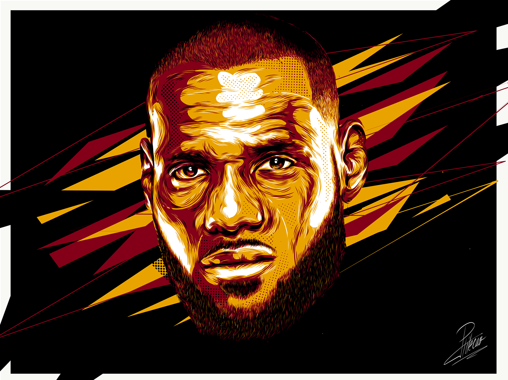
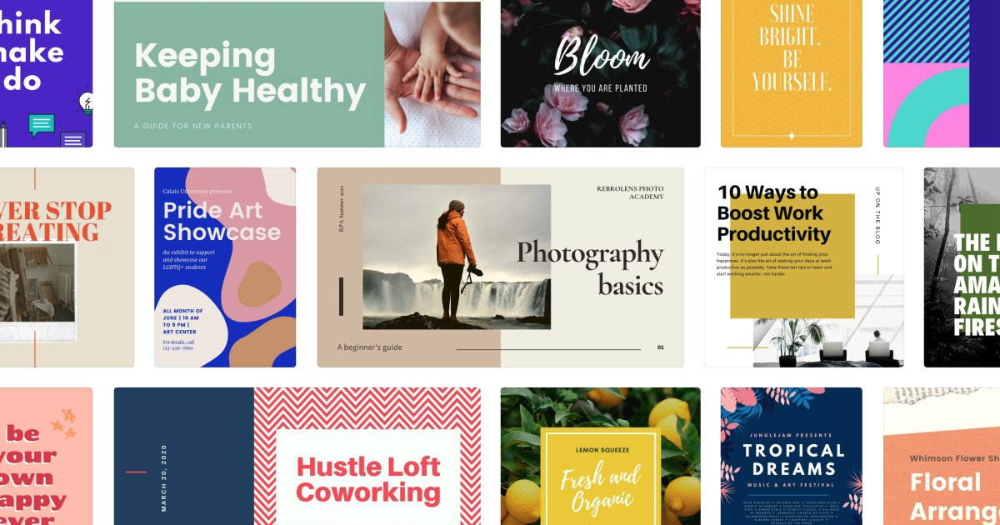
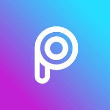
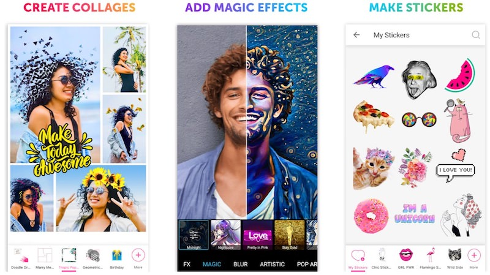
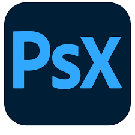
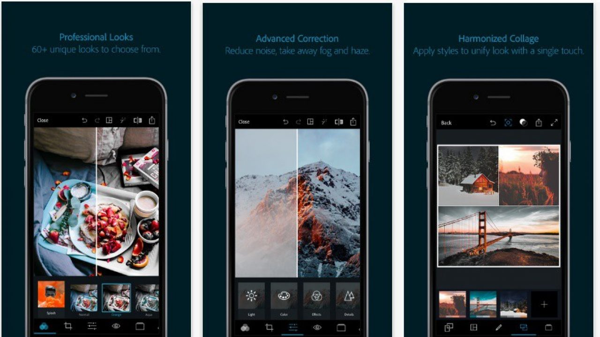
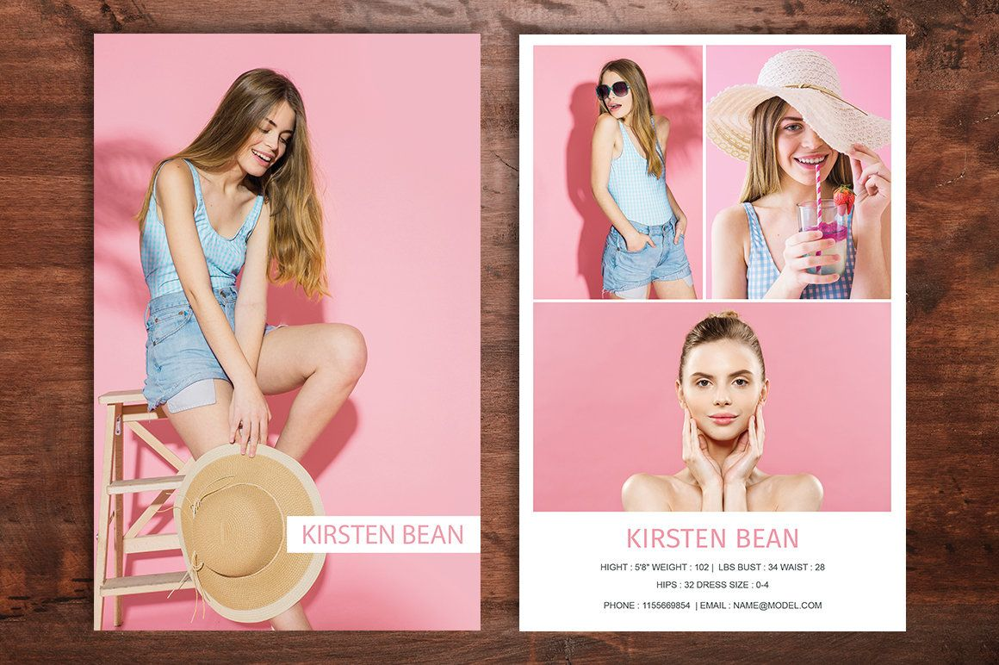

Top Android apps for graphics designers
Welcome to my pick of the best Android apps for creatives. On this page you'll find the must-have
downloads for designers, illustrators and artists and also links to download them immediately.
Because of the wide range of apps on the Google Play store, which are both paid and free, it can be hard
to pick the right ones, which is where my list of the best Android apps for creatives comes in.
My pick of the top Android apps also offer a wide variety of tools and features that can make your
digital art look better than ever. So, read on for our pick of the best Android apps for creatives that
you can download right now.
5. Adobe Illustrator Draw

Adobe launched its vector app Adobe
Illustrator Draw on Android back in 2016, but even now it is virtually the only credible way to
create vector drawings on a mobile device (unless you opt for a Windows-toting tablet). Illustrator Draw
will be familiar to anyone used to its desktop sibling, and it doesn't scrimp on features, with
configurable pen tips, layers, merge options, and more.
Adobe Illustrator Draw has a sleek and simplified interface that is approachable for new mobile artists,
but also robust enough for the seasoned illustrator to be considered

Some dope 🔥 art by
Caroline
Blanchet
And some not so dope 😒 art by yours truly.. lol
Download Adobe draw
4. Canva
Canva is a versatile graphic
design tool that runs in your browser and as an app on Android and iOS: it lets you create brochures,
flyers, posters, social media graphics, invitations, calendars, videos, presentations, cards, logos,
infographics, labels, letterheads, resumes, menus and more. You can start off with a template or a
completely blank slate, and build your design up however you want.
The platform includes an impressive number of editing and layout tools as well – covering everything
from image cropping to blur effects to background removal. Objects can be easily arranged and layered in
a project, and it's straightforward to add extras like text captions or fun stickers on top of whatever
you're doing.
Canva prides itself on being simple to use for anyone, with or without graphic design experience, and
it's certainly true that the templates and intuitive tools mean you can create something very
professional-looking very quickly.

Some cool canva templates
Download Canva Pro (free)
3. Picsart

When you first open PicsArt, the visually busy community home page is displayed, and it might take a few
moments for a new user to wade through all the buttons to figure out what to do first.
PicsArt's photo-editing module is as comprehensive as you can get in an app intended for the general
market. PicsArt's clean, easy-to-understand photo editing gives savvy users lots of creative control
(including the ability to brush effects onto selected areas of your picture) while being transparent
enough for novices to experiment successfully.
PicsArt has long had a nice selection of stickers. Now you can create
custom stickers from your photos, such as a sticker of a flower you photographed, or your friend's head.
PicArts' biggest new feature is Remix, which adds a lively dimension of social photo editing to the app.
You can share a photo with a group of up to 50 friends, and they can add stickers and text, draw, and
even copy and paste portions of other pictures onto it (such as adding people or pets to your photo).

Download Picsart Pro (free)
2. Adobe Photoshop Express

Adobe Photoshop Express is an excellent free photo editor for desktops and mobile devices.
It looks as smart as any Adobe product – beautifully designed, with clear icons and uncluttered menus.
When you first open PicsArt, the visually busy community home page is displayed, and it might take a few
moments for a new user to wade through all the buttons to figure out what to do first.
Tools are split into two categories: Edit and Decorate. The first of these includes standard options
like saturation adjustment, cropping, resizing and white balance. There are also some more advanced and
unusual tools that you won't find in most online photo editors, including an excellent fill light option
for reducing harsh shadows and an auto correct setting that suggests various quick adjustments to your
image's colors, which you can apply with a single click.
The decorate option is less practical and more fun, offering a set of WhatsApp-style stickers for
customizing your photos before sharing them on social media. You can't edit the text on decorations, but
you can resize, reposition, rotate and adjust their opacity.
Once you've finished, Photoshop Express Editor lets you save the edited photo to your device. The only
format available is JPG, and it's a pity there's no option to send the file directly to Twitter or
Facebook – particularly since the decorations seem to lend themselves to use on social media – but you
can choose a file name and destination, and the editor lets you know the size of the exported file
before you commit to saving it.

Download Adobe Photoshop Express
2. Adobe Comp CC
Adobe software is often used by professionals for graphic design and other media creation professions to
great effect. Adobe has added most of their most popular software to the Play Store as mobile-optimized
applications for on-the-go productivity. The newest member of the Adobe mobile suite is Comp CC, an all
new app that eases the editing load on the go.
Comp CC is, essentially, a wire-frame and concept creation tool for exporting into other Adobe software
for refinement. It has preconfigured templates for web, paper, and mobile layouts that you can edit and
export to InDesign, Photoshop and Illustrator as well as Adobe’s cloud where you can pull it down to any
machine you wish.
The idea behind Comp appears to be that it’s something to get you started on a project, lay out a plan
while on the go without having to use draft paper or lose progress by starting over on your main editing
machine. It’s almost like a draft program but lets you get real progress on what would eventually become
a more complex design for a web page, magazine, business card or what have you.

Download Adobe Comp CC